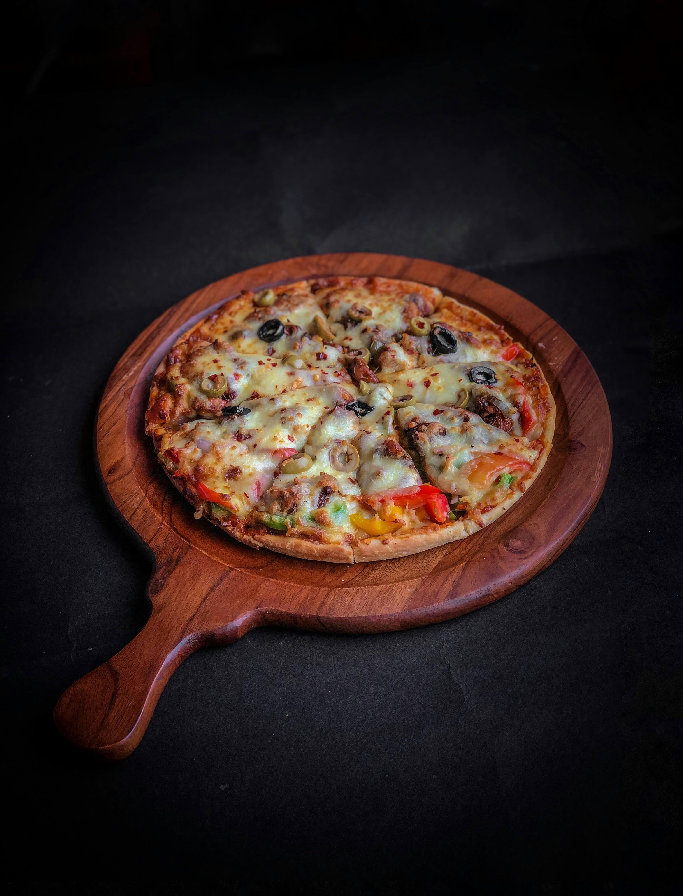

Pizza

Description
Pizza is a beloved Italian dish made with a soft and chewy yeast-based crust topped with tomato sauce, cheese, and various delicious toppings of your choice. It's a favorite comfort food enjoyed worldwide.
Ingredients
- Dough:
- 2 1/2 cups all-purpose flour
- 1 tsp sugar
- 1 packet active dry yeast (7g)
- 1 tsp salt
- 1 tbsp olive oil
- 3/4 cup warm water
- Toppings:
- 1 cup tomato sauce
- 2 cups mozzarella cheese (shredded)
- Bell peppers, onions, olives, pepperoni (optional)
- Fresh basil (optional)
- Salt, pepper, oregano (to taste)
Steps
- Prepare dough by mixing flour, sugar, salt, and yeast. Add warm water and olive oil, knead until smooth. Let it rise for 1 hour.
- Preheat the oven to 220°C. Roll out the dough into a round base and place on a greased baking tray.
- Spread tomato sauce over the base, sprinkle mozzarella cheese, and arrange your desired toppings.
- Season with salt, pepper, and oregano. Bake for 12-15 minutes until the crust is golden and cheese melts.
- Garnish with fresh basil and serve hot.
Home